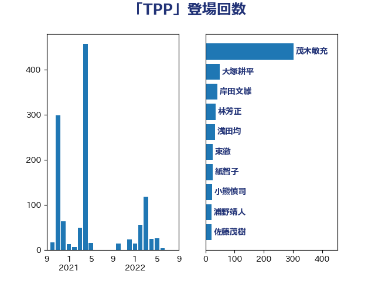

単語「TPP」

| 茂木敏充 | 自由民主党 | 302 回 |
| 大塚耕平 | 国民民主党 | 49 回 |
| 岸田文雄 | 自由民主党 | 41 回 |
| 林芳正 | 自由民主党 | 36 回 |
| 浅田均 | 日本維新の会 | 33 回 |
| 東徹 | 日本維新の会 | 25 回 |
| 紙智子 | 日本共産党 | 25 回 |
| 小熊慎司 | 立憲民主党 | 24 回 |
| 浦野靖人 | 日本維新の会 | 22 回 |
| 佐藤茂樹 | 公明党 | 21 回 |
| 吉良州司 | 無所属 | 18 回 |
| 穀田恵二 | 日本共産党 | 17 回 |
| 田村貴昭 | 日本共産党 | 16 回 |
| 山際大志郎 | 自由民主党 | 15 回 |
| 和田義明 | 自由民主党 | 14 回 |
| 西村康稔 | 自由民主党 | 14 回 |
| 野田佳彦 | 立憲民主党 | 14 回 |
| 野上浩太郎 | 自由民主党 | 13 回 |
| 小西洋之 | 立憲民主党 | 12 回 |
| 青山大人 | 立憲民主党 | 11 回 |
| 井上哲士 | 日本共産党 | 10 回 |
| 沢田良 | 日本維新の会 | 10 回 |
| 岡田克也 | 立憲民主党 | 9 回 |
| 石井苗子 | 日本維新の会 | 9 回 |
| 緑川貴士 | 立憲民主党 | 9 回 |
| 磯崎仁彦 | 自由民主党 | 8 回 |
| 緒方林太郎 | 無所属 | 8 回 |
| 舟山康江 | 国民民主党 | 8 回 |
| 三浦信祐 | 公明党 | 7 回 |
| 中根一幸 | 自由民主党 | 7 回 |
| 中谷真一 | 自由民主党 | 7 回 |
| 菅義偉 | 自由民主党 | 7 回 |
| 薗浦健太郎 | 自由民主党 | 7 回 |
| 世耕弘成 | 自由民主党 | 6 回 |
| 和田有一朗 | 日本維新の会 | 6 回 |
| 泉健太 | 立憲民主党 | 6 回 |
| 足立康史 | 日本維新の会 | 6 回 |
| 近藤和也 | 立憲民主党 | 6 回 |
| 鈴木俊一 | 自由民主党 | 6 回 |
| 小田原潔 | 自由民主党 | 5 回 |
| 山本剛正 | 日本維新の会 | 5 回 |
| 山田宏 | 自由民主党 | 5 回 |
| 笠井亮 | 日本共産党 | 5 回 |
| 梶山弘志 | 自由民主党 | 4 回 |
| 武部新 | 自由民主党 | 4 回 |
| 玉木雄一郎 | 国民民主党 | 4 回 |
| 福田昭夫 | 立憲民主党 | 4 回 |
| 藤木眞也 | 自由民主党 | 4 回 |
| 青山繁晴 | 自由民主党 | 4 回 |
| 音喜多駿 | 日本維新の会 | 4 回 |
| 高市早苗 | 自由民主党 | 4 回 |
| 宮内秀樹 | 自由民主党 | 3 回 |
| 河野義博 | 公明党 | 3 回 |
| 西田実仁 | 公明党 | 3 回 |
| 黄川田仁志 | 自由民主党 | 3 回 |
| 齋藤健 | 自由民主党 | 3 回 |
| 上杉謙太郎 | 自由民主党 | 2 回 |
| 伊藤信太郎 | 自由民主党 | 2 回 |
| 大野敬太郎 | 自由民主党 | 2 回 |
| 小林鷹之 | 自由民主党 | 2 回 |
| 後藤祐一 | 立憲民主党 | 2 回 |
| 浅野哲 | 国民民主党 | 2 回 |
| 舞立昇治 | 自由民主党 | 2 回 |
| 野間健 | 立憲民主党 | 2 回 |
| 鈴木宗男 | 日本維新の会 | 2 回 |
| 高橋光男 | 公明党 | 2 回 |
| 中西祐介 | 自由民主党 | 1 回 |
| 仁木博文 | 無所属 | 1 回 |
| 佐藤正久 | 自由民主党 | 1 回 |
| 北村経夫 | 自由民主党 | 1 回 |
| 城内実 | 自由民主党 | 1 回 |
| 大石あきこ | れいわ新選組 | 1 回 |
| 山口壯 | 自由民主党 | 1 回 |
| 山口那津男 | 公明党 | 1 回 |
| 平井卓也 | 自由民主党 | 1 回 |
| 武見敬三 | 自由民主党 | 1 回 |
| 江藤拓 | 自由民主党 | 1 回 |
| 渡辺周 | 立憲民主党 | 1 回 |
| 渡辺猛之 | 自由民主党 | 1 回 |
| 滝波宏文 | 自由民主党 | 1 回 |
| 熊野正士 | 公明党 | 1 回 |
| 片山さつき | 自由民主党 | 1 回 |
| 猪口邦子 | 自由民主党 | 1 回 |
| 玄葉光一郎 | 立憲民主党 | 1 回 |
| 田島麻衣子 | 立憲民主党 | 1 回 |
| 白石洋一 | 立憲民主党 | 1 回 |
| 石垣のりこ | 立憲民主党 | 1 回 |
| 石川博崇 | 公明党 | 1 回 |
| 礒崎哲史 | 国民民主党 | 1 回 |
| 神津たけし | 立憲民主党 | 1 回 |
| 神谷裕 | 立憲民主党 | 1 回 |
| 篠原豪 | 立憲民主党 | 1 回 |
| 重徳和彦 | 立憲民主党 | 1 回 |
| 金子恵美 | 立憲民主党 | 1 回 |
| 鈴木憲和 | 自由民主党 | 1 回 |
| 鈴木義弘 | 国民民主党 | 1 回 |
| 長峯誠 | 自由民主党 | 1 回 |
| 須藤元気 | 無所属 | 1 回 |
| 高野光二郎 | 自由民主党 | 1 回 |
| 高鳥修一 | 自由民主党 | 1 回 |
| 鷲尾英一郎 | 自由民主党 | 1 回 |
| 麻生太郎 | 自由民主党 | 1 回 |